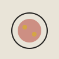
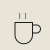

Cooking
I like cooking as a break from screens — mostly Gujarati home cooking, with the occasional attempt at something I saw and had to try myself. It's one of the few things I do where a bug just means dinner's a little off, not a stack trace.
Photography is the thing I do the most, so it gets the interactive piece below. It's built as a contact sheet: click a frame to bring it forward, or use the arrow keys once one is open.

Plated meal
Morning coffeeNo frame selected.
I like cooking as a break from screens — mostly Gujarati home cooking, with the occasional attempt at something I saw and had to try myself. It's one of the few things I do where a bug just means dinner's a little off, not a stack trace.
Gujarati is my first language, and I move between that, Hindi, and English day to day, which comes in handy for translating things for family back home — and occasionally for explaining a very literal translation joke that doesn't land in English at all.
Mostly street and food photography, shot on whatever's in my pocket at the time. The gallery above is a small sample — I tend to take a lot more photos than are ever worth keeping, which is its own kind of debugging.